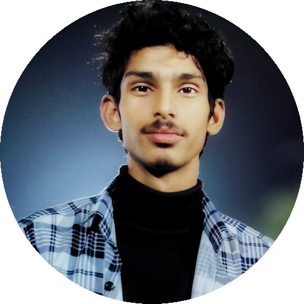

×
B.Tech Computer Science student focused in Artificial Intelligence and Machine Learning, with hands-on project experience in Python, Scikit-Learn, Hugging Face, RAG, FAISS, FastAPI, Computer Vision, and ROS 2-based autonomous robotics.
Hire Me Download CV
Hi, I'm Sarwan Kumar Pandey! I am a Computer Science Engineering student specializing in Artificial Intelligence & Machine Learning at SR Institute of Management & Technology (B.Tech 2023–2027), based in Lucknow, India.
During my research & development work at the Center of Intelligent Robotics, IIIT Allahabad, I applied Reinforcement Learning, NLP, and Computer Vision techniques to real-world intelligent systems. I developed ROS 2-based workflows covering simulation, navigation, localization, SLAM, and vision integration for ground robotics and drone platforms.
From engineering multithreaded real-time FaceID systems with ONNX Runtime to building high-speed vector retrieval (RAG) pipelines and deploying CNN classifiers via FastAPI, I combine deep theoretical understanding with robust software deployment.
Read More— Sarwan Kumar Pandey
Lucknow, India
Remote / Hybrid / On-Site
I am actively seeking roles in AI/ML Engineering, Computer Vision, Autonomous Robotics (ROS 2), and Deep Learning Research.
Yes! I specialize in containerizing models with Docker, building asynchronous FastAPI microservices, and optimizing inference with ONNX Runtime.
Absolutely. I am available for full-time roles, internships, and research collaborations both remotely and on-site globally.
Click to Play